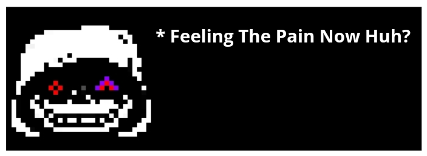

Go Back
Undertale :
Last Corridor
Dust
Sans
Information
* You Check,
Dust
Sans
ATK 80 DEF 45
* Looks Like
He
Is Ready Now
* Doesn't Matter, End This Quick
Data
Dust
Tale Sans, More Confident Than Ever
Karmic Retribution : No
Stamina : 225 ( Visual )
Stamina Gain Rate: Same Like Waterfall
Theme
Lore
After Killing Asgore,
Dust
Sans Brace Himself To Face The Humans That Have Been An Annoyance To His Road At The Dark Corridor When Suddenly...
Passive
High L.O.V.E - Gains An Attack Buff And Stamina After Every 2 Kill
Focus Bar
* You Must Fill The Bar Atleast 10% To Enter Phase 2
* In order To Fill The Bar You Need To Do Damage
* The Bar Max Capacity is 300 Damage ( 3Hp damage for 1% bar )
Available Attacks
1st Move
( Circle Rush )
( 6 stamina cost )
( CD : 6s )
( Cooldown Starts Only After The Bones Has Been Fired )
2nd move
( Pellets Surround )
( 6 stamina cost )
( CD : 8s )
3rd Move
( Madness Blasters )
( 3 stamina cost )
( CD : 8s )
Summons Bones And Move Them Around You, Click The Move Again To Shoot At Your Mouse Cursor.
{ Damage : 8Hp / 5 Stam Per Bones }
{ Unique : The Bones Will Serve As A Shield Before It Shoots Automaticly After 3s Not Being Used }
( High L.O.V.E Passive : More Bones )
Summons Pellets Circle on the Charas ( And Insanity ), The Pellets Circle Summons For 1.5s Before Fully Formed, The Pellets won't Damage Until Fully Circled Up
( Damage : 10Hp / 6 Stam )
( Unique : Summons On All Enemies )
( High L.O.V.E Passive : pellets Damage Is Increased by 2Hp )
Summon A singular Blaster That Shoots On Your Mouse Cursor
( Damage : 10Hp / 5 Stam )
( Unique : You can Shoot Again 5x With A 1.5s Cd In between Before Fully Going On A CD )
( High L.O.V.E Passive : +1 Usage )
4th Move
( Fire Tornado )
( 15 stamina cost )
( CD : 10s )
5th Move
( Spear Barrage )
( 8 stamina cost )
( CD : 10s )
6th Move
( Colored Lasers )
( 10 stamina cost )
( CD : 20s )
Summons A Tornado Of Fire On Your Mouse Cursor, The Tornado Moves Around Randomly Through The Corridor And Every 5s Shoots 5 Fireballs To The Chara's. Despawns After 12s
( Damage - Tornado : 12Hp / 6 Stam | Fire Ball : 10Hp / 5 Stam )
( Unique : Getting Damaged By The Attack Deal Burn Damage for 2s ( -2Hp per 1 Second ) )
( High L.O.V.E Passive : Needs 4 Kills, A Second Tornado Will Appear Randomly In The Corridor )
Summons 4 Spears On Top Of You And Fires them towards Your cursor
( Damage : 7Hp / 4 Stam )
( Unique : You can Summon More Spears ( 2 Spears per 0.5s ( Caps At +8 Spears ) ) And Press The Ability Again To Shoot Them, While Shooting You Can Aim The Spears As They Go ( Shoots 2 Spear per 0.1s )
( High L.O.V.E Passive : +2 Starting Spears )
Summons Laser On Top Of The Corridor Going Forward From Sans Side Corridor Towards Chara side corridor. The Laser Spawns 4x With Blue And Orange Colors only
( Damage : 8Hp / 4 Stam)
( Unique : Getting Hit Would Put You In A Box Attack Where 3 Laser Colored Goes Forward From The Right Side Box )
( High L.O.V.E Passive : 2 Kill = +3 Lasers At Box Attack, 4 Kills = +1 Lasers On Top Of Corridor )
7th Move
( Trident Swing )
(8 stamina cost)
(CD : 18s)
8th Move
( None )
(- stamina cost)
(CD : -s)
9th Move
( None )
(- stamina cost)
(CD : -s)
Dust Would Glow Red And Swings Asgore's Trident Infront Of Him
( Damage : 10Hp / 5 Stam)
( Unique : Getting Hit Would Do Burn Damage For 3s ( -2Hp Per 1s ) )
( High L.O.V.E Passive : After 4 Kills, Summon 6 Fireballs Going Forward In Front Of You ( Damage : 6Hp ) While Also Dealing Burn For 2s ( -2Hp per 1s ) )
orange lines are The Fireballs Passive
[ NONE ]
[ NONE ]
Special Interaction
If
Insanity
Stamina Or HP Is Low On Phase 1
↓

If
Insanity
Dies in 2nd Phases
↓
If
Insanity
Dies On Phase 2 Being Last Hit By Chara's
↓
Short Cutscene ( Phase 2 Transition )
Requirement : Hits Dust While he is below 60 Stamina
Dust
Sans
Phase 2
( Click The Image )
Go Back